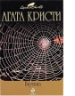

Паутина

В эту книгу вошли два романа, написанные по мотивам детективных пьес Агаты Кристи, имевших бешеную популярность на театральных подмостках всего мира. При переложении пьесы ничуть не потеряли остроты, динамики, загадочности, а неожиданные повороты сюжета на бумаге смотрятся не менее органично, чем на сцене.